10 GLB cảnh quan, nhân vật dùng chung khớp với tóc/áo/phụ kiện thay riêng và nguồn Blender có thể chỉnh sửa. Các ảnh dưới đây chụp hoặc render từ mesh thật.
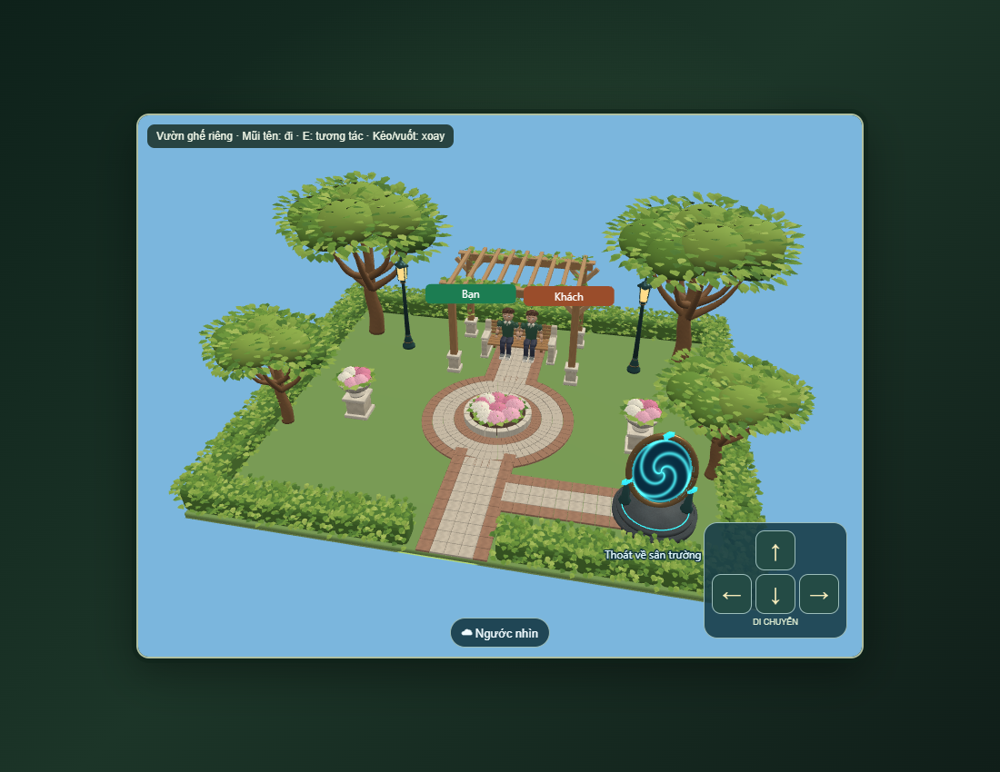
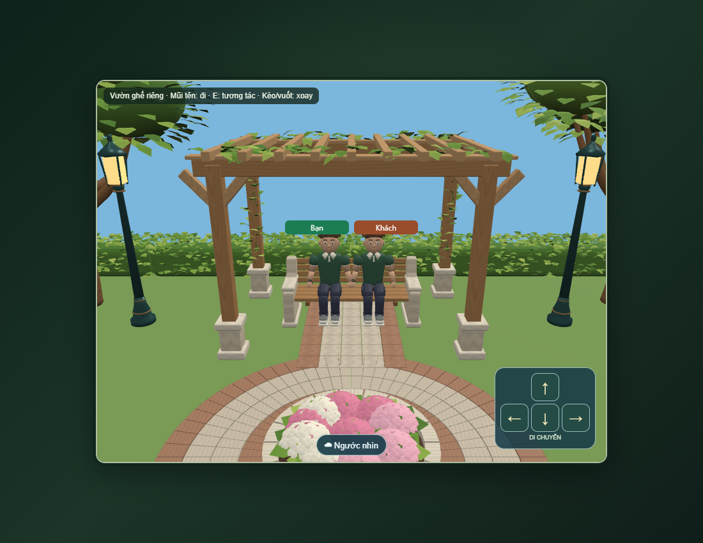
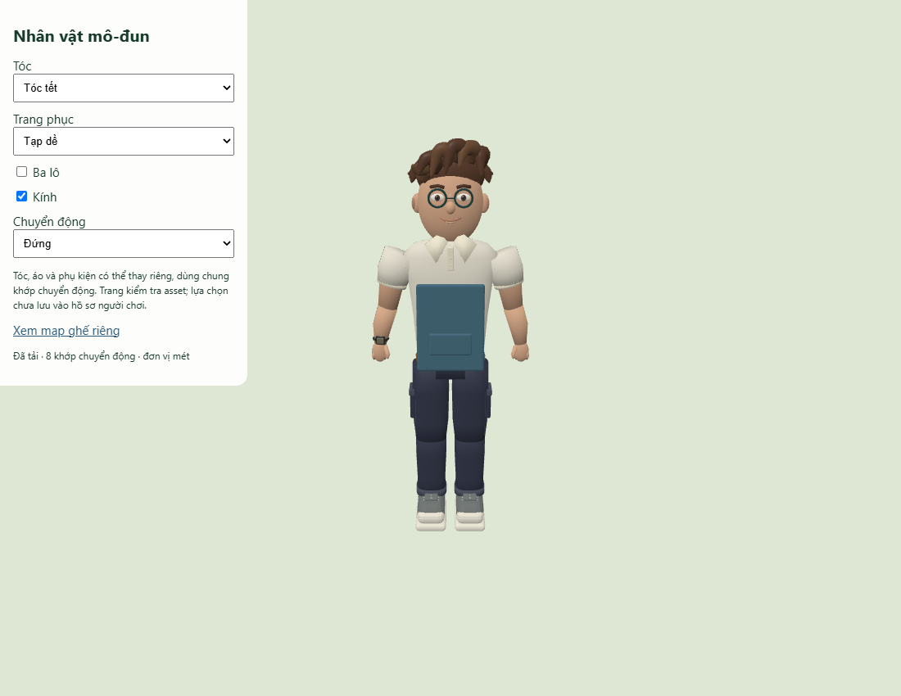
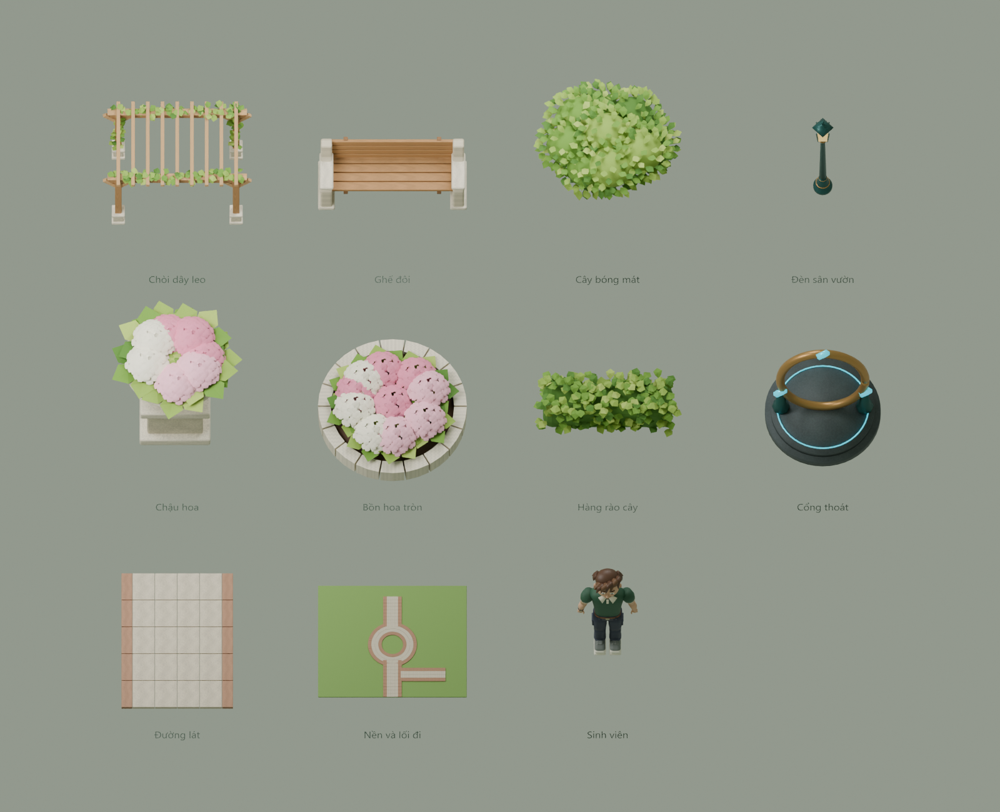
Cổng trong ảnh Blender là khung GLB; mặt xoáy hoạt động được ghép bằng shader trong Babylon.
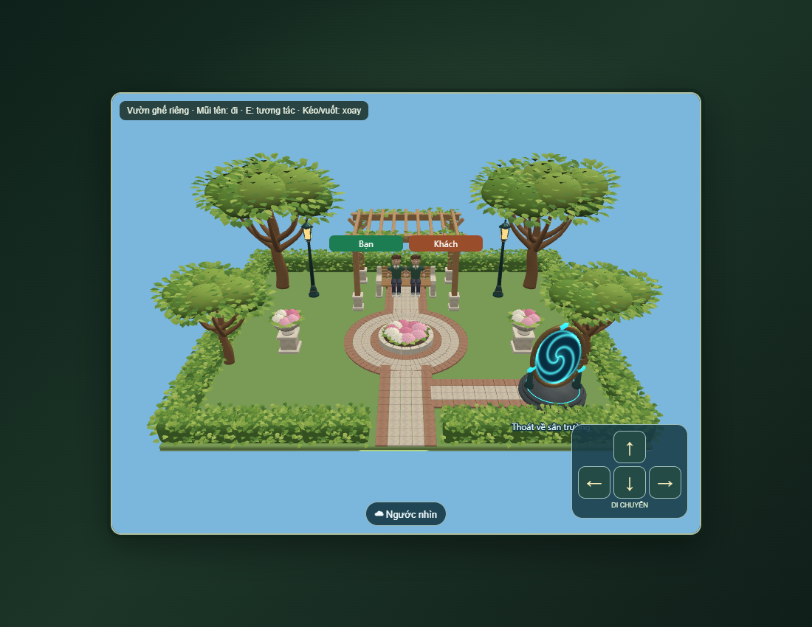
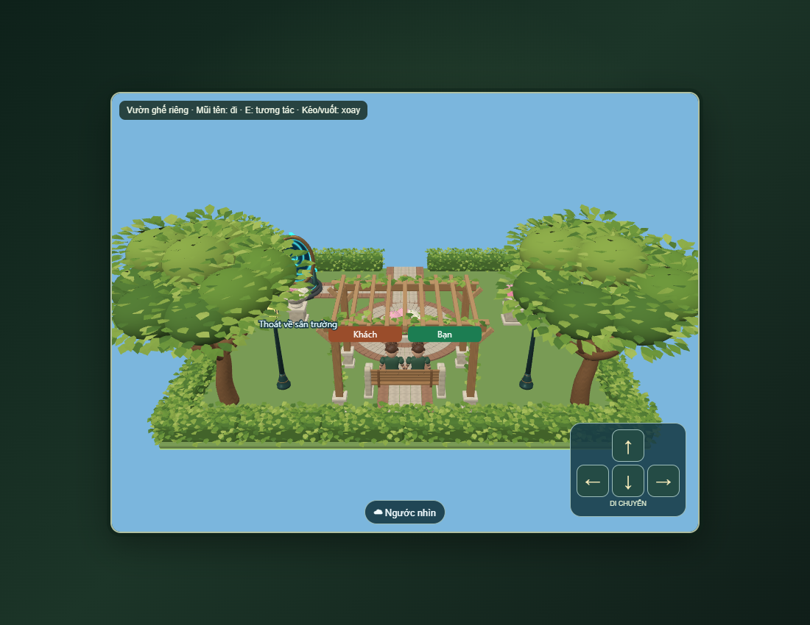
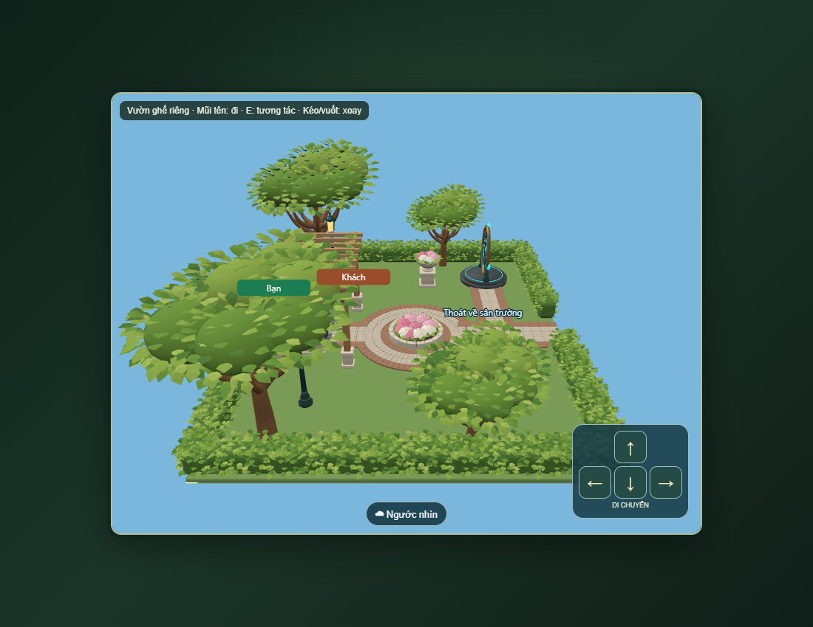
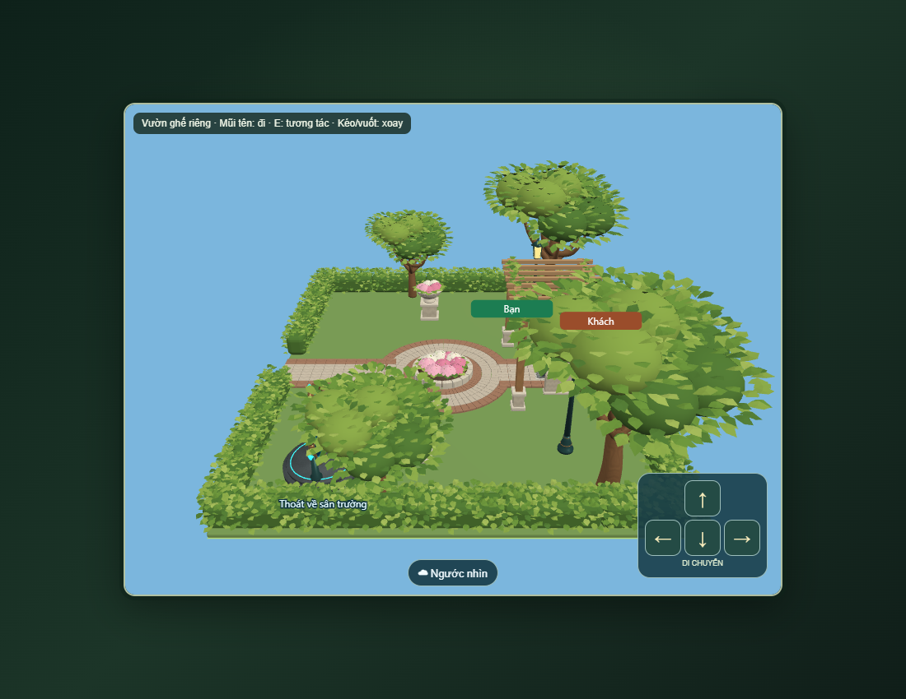
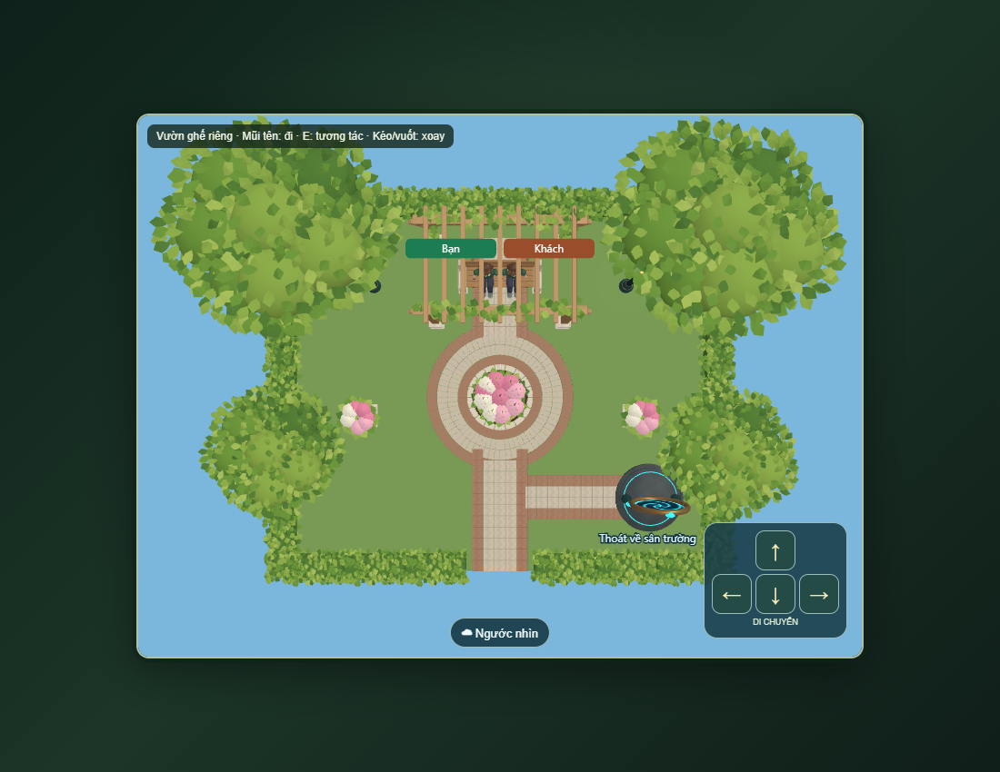
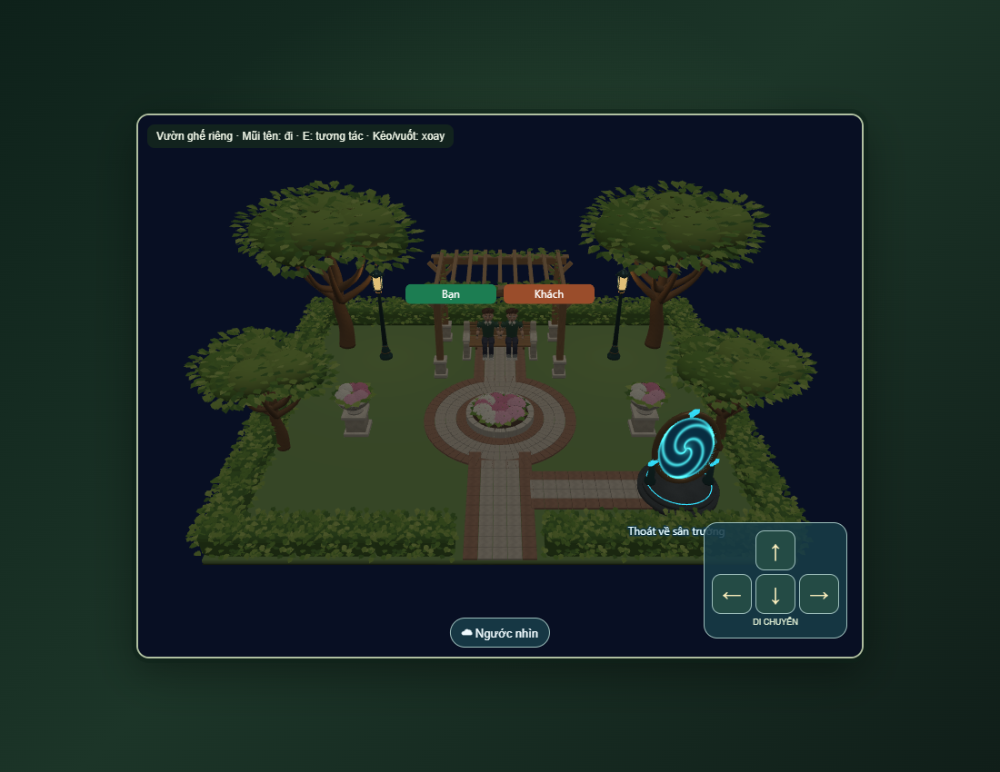
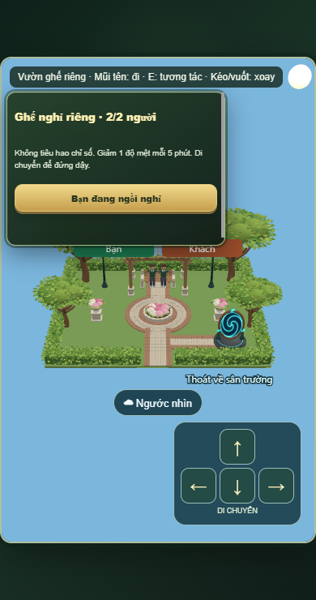
Phòng riêng theo từng cặp; vào map được đi lại bình thường, đến gần ghế mới ngồi. Không tiêu hao chỉ số, giảm 1 độ mệt mỗi 5 phút. Mũi tên/nút nổi để di chuyển, nhả để dừng, kéo/vuốt để xoay. Chạm lòng cổng mới thoát.